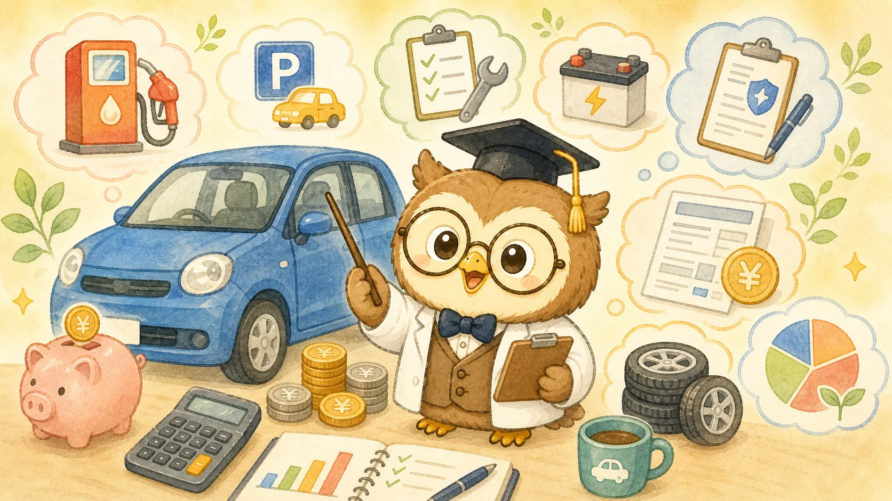

1. 車の維持費に含まれるもの
車の維持費とは、車を持ち続けるためにかかる費用のことです。代表的なものは、自動車税、重量税、自賠責保険、任意保険、ガソリン代、車検、駐車場代、メンテナンス費です。さらに、車をローンで買っている場合はローン返済、冬用タイヤが必要な地域ではタイヤ代や保管料も考える必要があります。
車の費用でやっかいなのは、毎月かかるものと、年に1回または数年に1回まとまってかかるものが混ざっていることです。ガソリン代や駐車場代は毎月見えやすいですが、自動車税や車検、タイヤ交換、修理費は忘れたころに出てきます。そのため、車の維持費は月額だけでなく年間コストで見ることが大切です。
| 費用 | 発生タイミング | 見落としやすい点 |
|---|---|---|
| 自動車税 | 年1回 | 排気量や車種で変わる |
| 任意保険 | 月払いまたは年払い | 年齢、等級、補償内容で差が大きい |
| ガソリン代 | 毎月 | 走行距離と燃費で変わる |
| 車検 | 通常2年ごと | 整備内容で金額が変わる |
| 駐車場代 | 毎月 | 都市部では大きな固定費になる |
| メンテナンス | 随時 | オイル、タイヤ、バッテリーなど |

2. 年間コストの目安
車の維持費は、車種や住んでいる地域、走行距離によって大きく変わります。ざっくりした目安として、軽自動車なら年間30万〜50万円、普通車なら年間40万〜80万円以上になることがあります。駐車場代が高い地域や、ローン返済がある場合はさらに増えます。
| 項目 | 軽自動車の目安 | 普通車の目安 |
|---|---|---|
| 税金 | 年1万〜2万円台 | 年3万〜6万円台 |
| 任意保険 | 年4万〜8万円 | 年5万〜12万円 |
| ガソリン代 | 年8万〜15万円 | 年10万〜25万円 |
| 車検・整備 | 年換算5万〜8万円 | 年換算7万〜12万円 |
| 駐車場代 | 地域差が大きい | 地域差が大きい |
ここにローン返済を加えると、年間コストは大きく変わります。月3万円のローンなら年間36万円です。維持費が年間50万円、ローンが年間36万円なら、車にかかる総額は年間86万円になります。月に直すと約7.2万円です。車を買う前に、この月額感まで見ると判断しやすくなります。
ケース別に見る年間費用
車の維持費は、同じ車種でも使い方で変わります。通勤で毎日使う人、週末だけ使う人、都市部で駐車場を借りる人、地方で自宅に停められる人では、年間コストが大きく違います。ここでは、イメージしやすいように3つのケースで見てみます。
| ケース | 年間維持費の目安 | 高くなりやすい費用 |
|---|---|---|
| 地方・軽自動車・自宅駐車 | 約30万〜45万円 | ガソリン、車検、タイヤ |
| 郊外・普通車・通勤利用 | 約45万〜70万円 | 燃料、保険、整備 |
| 都市部・普通車・駐車場あり | 約70万〜120万円 | 駐車場、保険、ローン |
都市部で駐車場代が月3万円かかる場合、それだけで年間36万円です。地方で自宅に無料で停められる場合と比べると、駐車場代だけで軽自動車1台分の年間維持費に近い差が出ることもあります。車を買うか迷うときは、車両価格よりもまず「自分の地域で固定費がどれだけかかるか」を見ましょう。
月額に直すと家計への重さが見える
年間60万円の維持費と聞くと、少しぼんやり感じるかもしれません。しかし月額に直すと5万円です。年間90万円なら月7.5万円、年間120万円なら月10万円です。家計で見ると、車は家賃や住宅ローンに近い大きさの固定費になることがあります。
車が生活に必要なら、その費用は必要経費です。ただし、なんとなく所有している場合や、月に数回しか使わない場合は、かなり重い固定費になっている可能性があります。年額と月額の両方で見ると、手放すべきか、乗り換えるべきか、保険や駐車場を見直すべきかが判断しやすくなります。
3. 軽自動車・普通車の違い
車の維持費を抑えたい場合、軽自動車は有力な選択肢です。税金や車検、タイヤ、燃費などで普通車より安くなりやすいからです。特に街乗り中心、1〜2人で乗ることが多い、荷物を大量に積まない、長距離移動が少ない場合は、軽自動車でも十分なケースがあります。
一方で、普通車には乗り心地、走行安定性、積載量、長距離移動の快適さなどのメリットがあります。家族で遠出することが多い、山道や高速道路をよく走る、荷物を多く積む場合は、維持費だけで軽自動車を選ぶと不満が出ることもあります。維持費と使い方のバランスで考えましょう。
- 街乗りや近距離移動が中心
- 駐車場や道が狭い地域に住んでいる
- 税金や保険、燃費を抑えたい
- 長距離移動や大人数乗車が少ない
4. 都市部と地方で変わる費用
車の維持費は、都市部と地方でも大きく変わります。都市部では駐車場代が高く、月2万円〜4万円以上かかることもあります。年間にすると24万円〜48万円です。車本体や税金よりも、駐車場代が家計に重くのしかかるケースがあります。
地方では駐車場代が安い、または自宅に駐車できることが多い一方で、車が生活必需品になりやすいです。通勤、買い物、通院、子どもの送迎などで毎日使う場合、ガソリン代やタイヤ代、走行距離に応じたメンテナンス費が増えます。雪国では冬用タイヤ、ワイパー、除雪用品なども必要です。
| 地域 | 高くなりやすい費用 | 考え方 |
|---|---|---|
| 都市部 | 駐車場代、保険料 | カーシェアや公共交通も比較する |
| 郊外 | ガソリン代、車検、タイヤ | 走行距離をもとに見る |
| 雪国 | 冬タイヤ、燃費低下、メンテナンス | 季節費用も年額に入れる |
5. ガソリン代の考え方
ガソリン代は、走行距離、燃費、ガソリン価格で決まります。計算式はシンプルで、走行距離 ÷ 燃費 × ガソリン単価です。たとえば、月800km走り、燃費が15km/L、ガソリン単価が170円/Lなら、月のガソリン代は約9,067円です。年間では約10.9万円になります。
ガソリン代 = 走行距離 ÷ 燃費 × ガソリン単価
燃費の差は長期で効きます。同じ月800kmでも、燃費10km/Lなら月13,600円、燃費20km/Lなら月6,800円です。差は月6,800円、年間で約8.1万円になります。車を選ぶときは、車両価格だけでなく燃費も見ておくと、長期の家計差が見えやすくなります。
ただし、燃費の良い車に買い替えれば必ず得とは限りません。買い替え費用が大きい場合、燃費差だけでは回収に長い時間がかかることがあります。今の車を乗り続ける場合の維持費と、買い替え後の維持費を年単位で比べましょう。
6. 保険・車検・メンテナンス
任意保険は、車の維持費の中でも見直し効果が出やすい費用です。年齢、運転者の範囲、車両保険の有無、等級、走行距離、補償内容によって保険料が変わります。補償を削りすぎるのは危険ですが、必要以上に広い条件になっていないか確認する価値はあります。
車検は、法定費用と整備費用に分かれます。法定費用は大きく変わりにくいですが、整備費用は依頼先や車の状態で差が出ます。ディーラー、整備工場、車検専門店などで見積もりが変わることがあります。安さだけで選ぶのではなく、必要な整備内容を理解することが大切です。
メンテナンスでは、オイル交換、タイヤ、バッテリー、ワイパー、ブレーキ周りなどが代表的です。メンテナンスを後回しにすると、燃費が悪くなったり、大きな故障につながったりすることがあります。節約のために必要な整備まで削るのではなく、早めに小さく整える方が結果的に安く済むこともあります。
7. ローンと買い替え判断
車をローンで買う場合、維持費にローン返済を加えて考える必要があります。月々の返済が2万円、3万円と聞くと払えそうに見えても、保険、ガソリン、駐車場、税金、車検を足すと、家計への負担はかなり大きくなります。車の予算は「月々のローン」ではなく「車にかかる月総額」で見るのが安全です。
| 項目 | 月額例 | 年額例 |
|---|---|---|
| ローン返済 | 30,000円 | 360,000円 |
| 保険 | 7,000円 | 84,000円 |
| ガソリン | 10,000円 | 120,000円 |
| 駐車場 | 10,000円 | 120,000円 |
| 税金・車検・整備 | 15,000円 | 180,000円 |
| 合計 | 72,000円 | 864,000円 |
買い替え判断では、修理費が増えてきたからすぐ買い替える、という単純な判断は避けたいところです。修理費が20万円かかっても、新しい車に買い替えてローンが年間50万円増えるなら、乗り続けた方が安いこともあります。一方で、安全性や故障リスク、燃費、家族構成の変化を考えると買い替えた方がよい場合もあります。
残価設定ローンや長期ローンの注意点
月々の支払いを抑えるために、残価設定ローンや長期ローンを選ぶ人もいます。残価設定ローンとは、将来の下取り価格をあらかじめ残価として設定し、その分を差し引いて月々の支払いを抑えるローンです。月額は安く見えやすいですが、走行距離や車の状態に条件がある場合があります。
長期ローンも、月々の負担は軽く見えますが、支払い期間が長いぶん総支払額が増えることがあります。車は年数が経つほど価値が下がり、修理費も増えやすい資産です。ローンが残っているのに車の価値が大きく下がると、買い替え時に身動きが取りにくくなることがあります。
ローンを組む場合は、月々の支払いだけでなく、総支払額、金利、支払い期間、途中で売却する可能性、車検時期をまとめて確認しましょう。車の維持費にローンを加えると、家計への影響はかなり大きくなります。
売却額・下取り額も維持費の一部として考える
車は購入後に価値が下がっていきます。売却時や下取り時にいくら戻るかも、実質的なコストに関係します。たとえば300万円で買った車を5年後に100万円で売却できた場合、車両本体だけで見ると5年間で200万円を使ったことになります。年間に直すと40万円です。
この考え方を入れると、車両価格が高い車ほど、維持費以外の負担も大きく見えます。もちろん、リセールバリューが高い車もあります。リセールバリューとは、売却時に残りやすい価値のことです。ただし、将来の売却額は市場や車の状態で変わるため、過信しすぎない方が安全です。
買い替えのたびに高い車を選ぶと、ローン返済だけでなく、価値の下落も家計に効いてきます。長く乗る、必要十分な車種を選ぶ、中古車も検討するなど、車両価格そのものを抑えることも大きな節約になります。
買う前に確認したいチェックリスト
- ローンを含めた月総額はいくらか
- 駐車場代を含めた年間維持費はいくらか
- 車検やタイヤ交換の費用を見込んでいるか
- 通勤や送迎など、本当に必要な利用頻度があるか
- カーシェアやレンタカーでは代替できないか
8. 節約ポイント
車の維持費を下げるには、まず金額が大きいところから見直すのが効果的です。駐車場代、任意保険、ローン、ガソリン代、車検費用は差が出やすい項目です。小さな節約を積み上げるより、固定費を一つ見直す方が効果が大きいことがあります。
- 任意保険の補償内容と運転者条件を見直す
- 駐車場代が高い場合は近隣相場を確認する
- 走行距離が少ないならカーシェアやレンタカーも比較する
- 車検は複数の見積もりを取る
- 燃費の悪化を防ぐため、必要なメンテナンスは行う
節約で注意したいのは、安全に関わる費用を削りすぎないことです。タイヤ、ブレーキ、ライト、保険の重要な補償などを無理に削ると、事故や故障時の負担が大きくなります。車の節約は「安全を保ちながら、過剰な固定費を下げる」方向で考えましょう。
任意保険の見直しで確認すること
任意保険は、補償内容によって保険料が大きく変わります。まず確認したいのは、運転者の範囲です。本人しか運転しないのに家族全員が運転できる条件になっている、年齢条件が合っていない、車両保険をつけたまま古い車に乗っている、といったケースでは見直し余地があります。
ただし、対人・対物の補償を大きく削るのはおすすめしません。事故時の損害は非常に大きくなる可能性があるため、保険料を下げたい場合でも、重要な補償は残すのが基本です。節約したいときは、運転者条件、車両保険、特約、年間走行距離、支払い方法などから確認しましょう。
車検費用を抑えるときの注意
車検は複数の見積もりを取ると差が出ることがあります。ディーラー車検は安心感がある一方、費用が高くなりやすいことがあります。車検専門店や整備工場は費用を抑えやすい場合がありますが、整備内容をよく確認することが大切です。
見積もりを見るときは、法定費用と整備費用を分けて確認しましょう。法定費用は税金や自賠責保険などで大きく変わりにくい部分です。整備費用は、部品交換や点検内容によって変わります。不要な整備を省くことは節約になりますが、必要な整備まで削ると故障や事故のリスクが上がります。
ガソリン代の節約は走り方も効く
ガソリン代は、燃費の良い車を選ぶだけでなく、走り方でも変わります。急発進、急加速、空気圧不足、不要な荷物の積みっぱなしは燃費を悪くしやすいです。日々の運転を少し整えるだけでも、長期では差になります。
また、短距離の移動が多いと燃費は悪くなりやすいです。近距離の買い物や駅までの移動など、徒歩や自転車で代替できるものがあれば、健康にも家計にもプラスになります。もちろん無理は禁物ですが、車に乗る回数を少し減らすだけでも年間の燃料費は下がります。
9. カーシェアとの比較
車を毎日使わない人は、カーシェアやレンタカーと比較する価値があります。特に都市部では、駐車場代が高いため、車を所有するだけで毎月大きな固定費が発生します。週末だけ使う、月に数回しか乗らない、駅やバスが使いやすい地域なら、所有しない方が安くなることがあります。
一方で、地方では車が生活必需品になりやすく、カーシェアの拠点が少ない地域もあります。通勤、送迎、通院、買い物で毎日使う場合は、所有した方が便利で現実的です。大切なのは、所有かカーシェアかを感覚で決めず、年間利用回数と年間コストで比べることです。
| 使い方 | 向きやすい選択 | 理由 |
|---|---|---|
| 毎日通勤で使う | 所有 | 利用頻度が高く、予約の手間が大きい |
| 週末だけ使う | 比較が必要 | 駐車場代次第で変わる |
| 月数回だけ使う | カーシェア・レンタカー | 固定費を抑えやすい |
| 子どもの送迎が多い | 所有 | 時間の自由度が重要 |
手放す前に試せること
車を手放すか迷う場合、いきなり売却する前に「車なし生活」を試してみるのも方法です。1か月だけ車を使う回数を減らし、公共交通、タクシー、カーシェア、ネットスーパー、自転車でどこまで代替できるか確認します。実際に試すと、思ったより困らない場合もあれば、やはり車が必要だとわかる場合もあります。
特に子育て世帯や高齢の家族がいる家庭では、費用だけで判断しにくい面があります。急な通院、雨の日の送迎、荷物が多い買い物など、車がある安心感も価値です。維持費を下げたいからといって無理に手放すのではなく、生活の不便さと費用を比べることが大切です。
車の維持費は予算化しておく
車検や税金は毎月発生しないため、支払い月に家計が苦しくなりやすいです。対策として、車用の積立を作っておくのがおすすめです。たとえば、車検や税金、タイヤ交換に年間24万円かかるなら、毎月2万円を車用口座に分けておきます。こうすると、車検月に慌てにくくなります。
車の費用を予算化すると、買い替え判断もしやすくなります。毎月の車用積立で足りない状態が続くなら、車種、保険、駐車場、利用頻度を見直すサインです。車は便利な道具ですが、家計を圧迫しすぎると他の目的に使えるお金が減ります。見える化して管理しましょう。
車費用が家計に占める割合を見る
車の維持費が高いかどうかは、年収や手取りによっても変わります。年間60万円の車費用は、手取り300万円の人にとっては20%です。手取り500万円の人にとっては12%です。同じ金額でも、家計への重さは違います。
車にかけるお金が大きすぎると、貯金、投資、教育費、旅行、住宅費などに回せるお金が減ります。車が趣味で優先順位が高いなら、それも一つの選択です。ただし、なんとなく高い車を持ち続けているだけなら、家計全体の満足度を下げている可能性があります。車費用を手取りの何%使っているか、一度計算してみましょう。
| 年間の車費用 | 手取り300万円の場合 | 手取り500万円の場合 |
|---|---|---|
| 40万円 | 約13% | 約8% |
| 60万円 | 約20% | 約12% |
| 90万円 | 約30% | 約18% |
よくある質問
計算ツールで自分の場合を確認しよう
車の維持費は、車種、走行距離、燃費、保険料、駐車場代、車検費用、ローンの有無で大きく変わります。平均額だけでは、自分の車が高いのか安いのか判断しにくいです。
はかるんツールの車維持費計算ツールでは、ガソリン代、保険料、税金、駐車場代などを入力して、年間コストの目安を確認できます。買い替え前、保険の見直し前、家計改善を考えるときに使ってください。
まとめ
- 車の維持費は税金、保険、燃料、車検、駐車場などを合計して考える
- 月額ではなく年間コストで見ると家計への影響がわかりやすい
- 軽自動車は税金や燃費面で安くなりやすい
- 都市部では駐車場代、地方では走行距離やメンテナンス費が効きやすい
- 節約は保険、駐車場、車検、燃費から見る
- 利用頻度が少ないならカーシェアやレンタカーも比較する